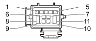

D004A FRONT/ENGINE COUPLING (ENGINE)
- Path
- Electrical equipment > 3 CONNECTORS > D INTERMEDIATE COUPLINGS > D004 FRONT/ENGINE COUPLING > D004A FRONT/ENGINE COUPLING (ENGINE)
- Kind
- connector pinout (pin -> wire colour -> other end)
- Applies to
- engines: 1.8; all production periods
- Interactive page
- https://sloeber94.github.io/elrnDB/#/939005865
Applies to: engines: 1.8; all production periods

Wiring | Colour |
|---|---|
NERO (black) |
Pin | Cable | Destination | |||
|---|---|---|---|---|---|
Sec.. | Colour | Node | Connect. | Pin | |
3 | 1,5 | AB (light blue with white stripe) | X | 1 | |
1 | |||||
1 | |||||
1 | |||||
5 | 1,5 | AN (light blue with black stripe) | 2 | ||
6 | 1 | N (black) | See L020 AIR CONDITIONING COMPRESSOR ENGAGEMENT ELECTRO-MAGNET | A | |
7 | 1 | MN (brown with black stripe) | See L020 AIR CONDITIONING COMPRESSOR ENGAGEMENT ELECTRO-MAGNET | B | |
8 | 1,5 | AN (light blue with black stripe) | X | 4 | |
1 | |||||
3 | |||||
1 | |||||
2 | |||||
2 | |||||
2 | |||||
2 | |||||
Topics linked from this page (15)
- 50 ENGINE
- A030A IGNITION COIL (ENGINE)
- K017 LAMBDA SENSOR ON CATALYZER
- K018 LAMBDA SENSOR ON CATALYZER - 2
- K041 AIR FLOW METER
- L010 FUEL VAPOUR RECOVERY SOLENOID VALVE
- L015 VARIABLE GEOMETRY SOLENOID VALVE
- L020 AIR CONDITIONING COMPRESSOR ENGAGEMENT ELECTRO-MAGNET
- N070A INJECTOR (COIL AND INJECTOR BRIDGE)
- N070B INJECTOR (COIL AND INJECTOR BRIDGE)
- N070C INJECTOR (COIL AND INJECTOR BRIDGE)
- N070D INJECTOR (COIL AND INJECTOR BRIDGE)
- N086 ELECTRONIC THERMOSTAT
- N092 PHASE SHIFTER SOLENOID VALVE ON INTAKE SIDE
- N093 PHASE SHIFTER SOLENOID VALVE ON EXHAUST SIDE